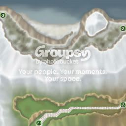
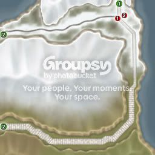

โพสต์แล้ว:
จันทร์ 09 มี.ค. 2009 7:01 pmโดย ECO
 Snop Snowfield
3D Isomatric View
3D Bird Eye View
Monster
Snop Snowfield
3D Isomatric View
3D Bird Eye View
Monster :
Cool /
Kerby Archen /
Crash Ice /
White Fang /
Polar Bear /
Crystal /
Lost Metalica /
White Bear
Material : Ice Flower / Grass / Crystal / Fallen Tree / Water Crystal / Mineral Lump / Paper Wood / Iron Stone / Wood Box 3
Attribute : Water
NPC
1 Koro
1 Pet Researcher [โรงเรียนฝึกสัตว์ Pet School Snop Snowfield]
2 Mashusha
[เควสส่งของ]
3 Water Soul
[เปลี่ยนอาชีพ Elementaler]
Warp
1
Snop Hiil
2
Frozen Cave B1F
โพสต์แล้ว:
จันทร์ 09 มี.ค. 2009 7:03 pmโดย ECO

Snop Hill
3D Isomatric View
3D Bird Eye View
Monster :
Pururu /
Archen /
Bau /
Cool /
Crash Ice /
White Fang /
Polar Bear /
Zeleb /
Crystal /
Lost Metalica
Material : Grass / Wood Box 1 / Paper Tree / Fallen Tree / Crystal
Attribute : Water / No
Warp
1
North Acronia Field
2
Snop Triangle
3
Snop Snowfield
โพสต์แล้ว:
จันทร์ 09 มี.ค. 2009 7:04 pmโดย ECO
ทำอะไรที่เป็นประโยชน์กับคนอื่นเหมือนกันนะเอก (แอบเหน็บ)
โพสต์แล้ว:
จันทร์ 09 มี.ค. 2009 7:04 pmโดย ECO

Snop Triangle
3D Isomatric View
3D Bird Eye View
Monster :
Archen /
Bau /
Cool /
Crash Ice /
White Fang /
Crystal /
Lost Metalica
Material : Light Silk Wood / Paper Tree / North Fruit Wood / Crystal / Wood Box 2
Attribute : Water / No
NPC
1 Northan Guard
2 Mister Rook
[เควสเทศกาล Valentine's Day ]
Warp
1
Nozarin Cape
2
Snop Hill
โพสต์แล้ว:
จันทร์ 09 มี.ค. 2009 7:06 pmโดย ECO
 Bastion of Fushigi Guild
Monster
Bastion of Fushigi Guild
Monster :
Basilicoke /
Fury /
Molly /
Solar Zelebu /
Knight Stock /
Forton /
Bandit /
Franker Pirate /
Pirate Bomber
Material : Earth Flower / Mushroom / Wood / Light Silk Wood / Earth Crystal / Wood Box 7
Attribute : Earth / No
NPC
1 Black Market Worker
2 Black Market Worker
3 Black Market Worker
4 Black Market Worker
5 Furniture Craftman
6 Fushigi Member Group
7 Resurrection Soldier [บันทึกเป็นจุด Save Point]
8 Merchant Guild
Warp
1 Fushigi Headquarter
2 Smithy Fushiki
3 Fushigi Pub
4 Pirate Camp
[ทำ Tiny Crown] [ดำเนินเควสทำ Flying Garden]
5 Yoko House
[หลอมรวมไอเท็ม]
6
Momo Plain
7 Bastion of Fushigi Guild
8
Fareast City